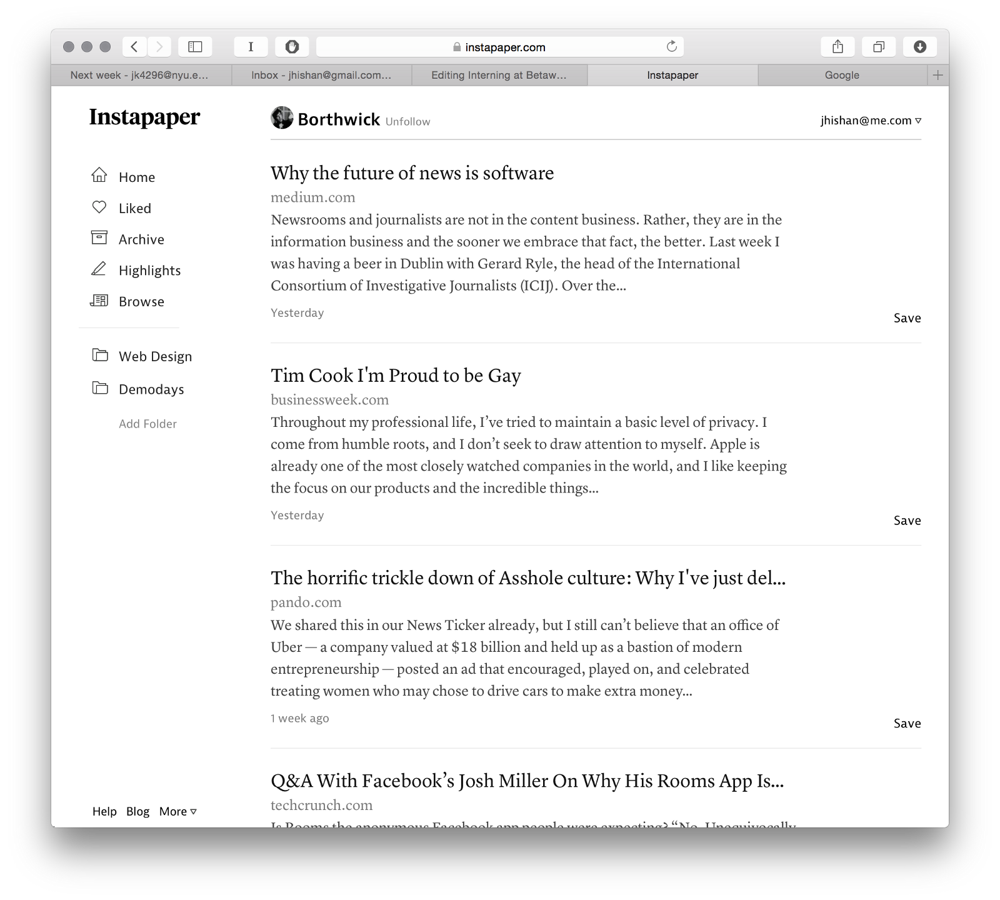

Justworks was an amazing summer. On the first day I remember my goal was to make a pull request before the day ended. I was pretty suprised that I was able to merge and deploy that pull request the same day. I received a lot of resposibility at Justworks and which led to me being able to learn a lot in a very mentor friendly environment. I worked on a lot of backend code. My big project during the summer was building the full stack implementation of a new permissioning system for our internal administration tool. I worked on smaller things too such as bug fixes and building out views. Overall, I was able to learn a lot about all things web development related with an extremely talented/passionate team.
At Syncano, I was a Junior Developer Evangelist. This meant a lot of things. I built small web applications, attended events, wrote documentation, and much more. On the left is a weather app. The front-end was developed by a colleague and I developed the backend using the Syncano API.
Instapaper was my first dive into real world development. It was an amazing opportunity because I was able to write production code for my first software development job. At Instapaper, I redid the browse section front-end and worked on some of the backend api. I developed the algorithm that figured out in which order to display the articles in this section. The goal of the algorithm was to make the user feel as though they would be reading something new in the browse section, all the while feeling consistent. After doing so, I built the internal api for the browse section to be used for our Android and iOS applications.

This is the user profile section I worked on.
This is an interactive d3 graph modeling some unique data. It was used as an internal tool.
I organize Demodays for Tech@NYU. Students from the NYC area come together once a month to show off the projects the've been working on. The last one was a few weeks ago at Venmo. My role is being the host, and putting the event together. This involves finding event space, fundraising, and reaching out to prominent industry leaders to speak at the event. The event averages 80-100 people.